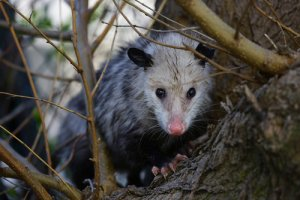
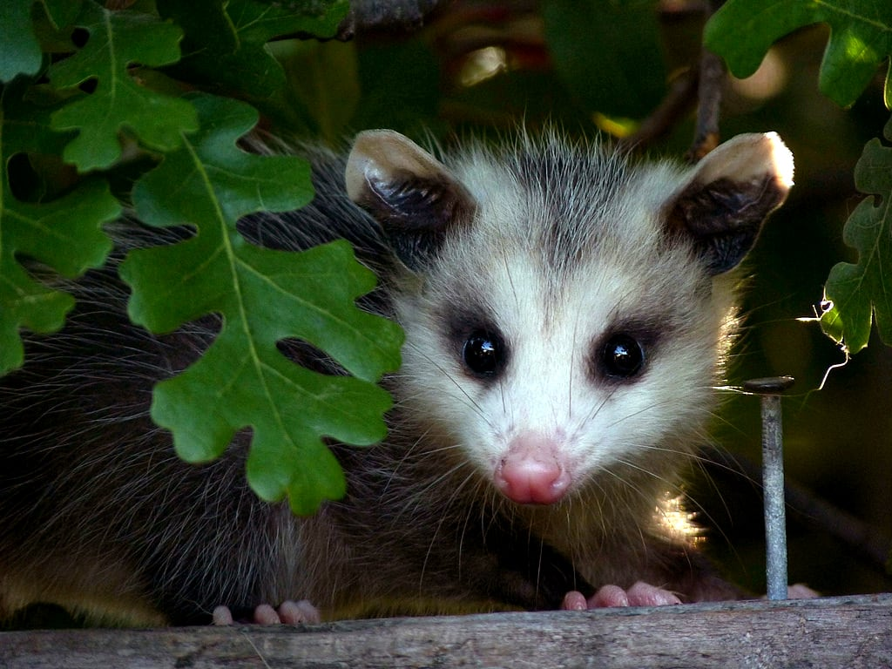

¿Que son Zarigüeyas?
La zarigüeya (Didelphis marsupialis) es un mamífero omnívoro. Conocida como chucha, runcho o fara, este animal habita cerca de ríos, humedales, basureros, zonas verdes y viviendas. Este espécimen es un marsupial pariente de canguros y koalas.
¿Qué comen las Zarigüeyas y dónde viven?
Son animales nocturnos, descansan de día refugiados en e interior de troncos y cavidades, y salen de noche a buscar alimento. Todas las especies de zarigüeyas son omnívoras, come de todo, se alimenta tanto de carne (gusanos, insectos, pequeños vertebrados, crías de ave, roedores, etc.) hasta granos, frutos y plantas.

